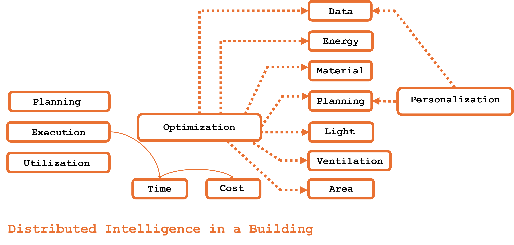

Jose Sanchez
Radical_Prototype is my attempt to explore possibilities to intervene in existing systems and imagine a new future. I challange the exisitng assumptions, question boundries by examining the converging trajectory of energy and data growth alongside construction.
Energy Infrastructure
- Source / Generation: Generators (fossil, renewable), solar panels, wind turbines
- Transmission: High-voltage lines, substations, transformers
- Distribution: Low-voltage lines, local substations, household connections
- Consumption: Homes, appliances, industrial loads
- Storage & Buffering: Batteries, microgrid nodes
- Governance / Control: Grid management, demand-response systems, local controllers
Data Infrastructure
- User / Edge: Humans interacting with gadgets, IoT devices, smart appliances
- Access & Modem Layer: Modem, home routers, wireless access points
- Network Layer: Cell towers, ISPs, fiber optics, IXPs
- Compute / Storage Layer: Edge servers, micro data centers, large-scale data centers
- Governance / Protocols: Internet protocols, caching, routing, service-level agreements
Explore the interactive 3D scene below. Use your mouse to rotate the camera around the scene and see the geometric primitives from different angles.
I am exploring the creation of self-contained ecosystems that generate, store, and distribute both energy and data. Rather than thinking of these units purely as construction elements, I see them as modular service hubs capable of supporting multiple functions simultaneously. Potentially integrated services include: energy management (DC power bus, buffering, storage), compute and networking (edge computing, IoT integration), water and plumbing systems (filtration, circulation), structural and mechanical interfaces for seamless connections, and governance protocols for multi-unit coordination of energy, data, and services.
